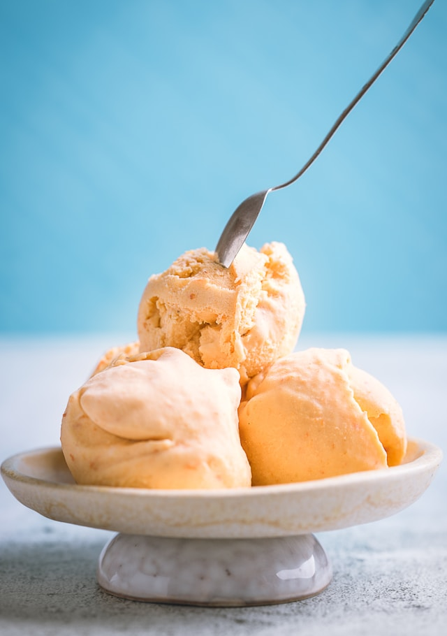

Go Back
Basic Vanilla Ice Cream (No-Churn) Recipe

Photo by Dovile Ramoskaite on Unsplash
Here’s a simple and delicious homemade vanilla ice cream recipe (no machine needed!), along with creative variations. You can customize it with mix-ins or flavors!
Ingredients:
- 2 cups (480ml) heavy cream (cold)
- 1 can (14oz/400g) sweetened condensed milk
- 2 tsp vanilla extract
- Pinch of salt
Instructions:
- Whip the cream: In a large bowl, beat the cold heavy cream until stiff peaks form (about 3-4 mins).
- Sweeten: Gently fold in the condensed milk, vanilla, and salt until fully combined.
- Freeze: Pour into a loaf pan or airtight container. Cover and freeze for 6+ hours (or overnight).
- Serve: Scoop and enjoy!
Flavor Variations (Mix into the base before freezing):
- Chocolate: Add ½ cup cocoa powder + chocolate chunks.
- Strawberry: Swirl in ½ cup mashed strawberries.
- Cookies & Cream: Crush 10 Oreo's and fold in.
- Coffee: Add 1 tbsp instant espresso powder.
- Mint Chip: 1 tsp peppermint extract + chocolate chips.